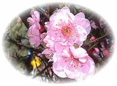

[前の日記]
[次の日記]
'*★
2月の花
★*'
..*..*..
2003年3月2日(日) 晴れ
..*..*..
2月に入ってから、通りのあちこちで花が咲き乱れていて、とてもきれいです。
最近買ったフォトショップ(Photo Shop)にもやっと慣れてきました。とはいえ、ここまでやるのに四苦八苦でした。自分で理解したと思った機能も、ちょっと手順が変わるとわからなくなったりで、1つのことができるようになるまで、1時間や2時間がすぐたってしまいます。でも、楽しいです。

..*..*..*..*..*..*..*..*..*..*..*..*..*..*..*..*..*..*..*..*..*..